Οι Γότθοι από τον βορρά και οι Πέρσες από την ανατολή περνούσαν τα σύνορα, λεηλατούσαν περιοχές και εμπόδιζαν το εμπόριο.
3ος ΑΙΩΝΑΣ Μ.Χ.
Η αυτοκρατορία αντιμετωπίζει προβλήματα
Για περίπου 200 χρόνια (1ος και 2ος αιώνας μ.Χ.), η Ρωμαϊκή Αυτοκρατορία γνώρισε μεγάλη ακμή. Ήταν δυνατή, πλούσια και επικρατούσε ειρήνη.
Όμως, από τις αρχές του 3ου αιώνα μ.Χ., άρχισαν σοβαρά προβλήματα που απειλούσαν ακόμη και τη διάλυσή της!
Τι συνέβαινε;
Οι στρατιώτες, αντί να προστατεύουν την αυτοκρατορία, πολεμούσαν μεταξύ τους και πολλές φορές αποφάσιζαν ποιος θα γίνει αυτοκράτορας.
Ορισμένες μακρινές επαρχίες της Ανατολής αποχωρίστηκαν από την αυτοκρατορία και δημιούργησαν δικά τους κράτη.
Οι Χριστιανοί διώκονταν για την πίστη τους. Αυτό προκαλούσε δυσαρέσκεια και συγκρούσεις ανάμεσα στους κατοίκους.
Η αυτοκρατορία χρειαζόταν επειγόντως αλλαγές!
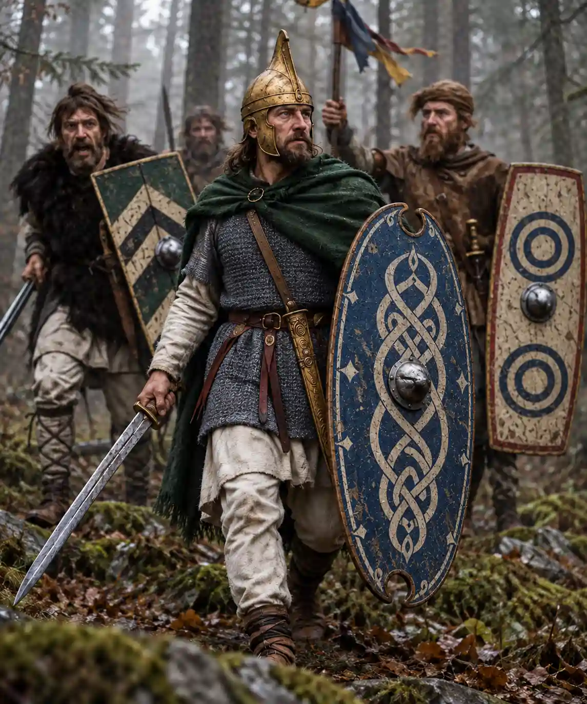
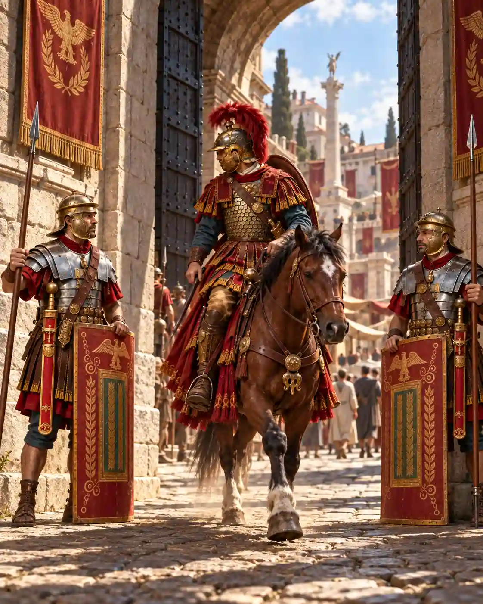
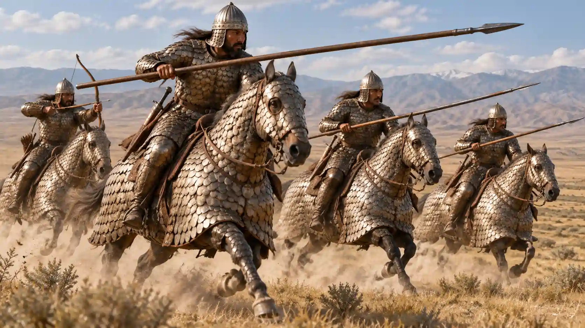
ΔΙΟΙΚΗΣΗ ΑΠΟ ΤΕΣΣΕΡΙΣ
Ο Διοκλητιανός και η Τετραρχία
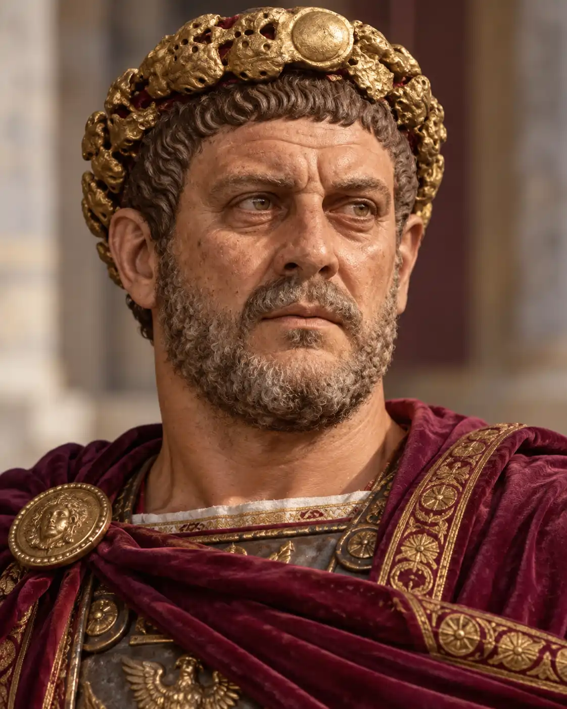
Ο αυτοκράτορας Διοκλητιανός σκέφτηκε έναν νέο τρόπο διοίκησης για να αντιμετωπίσει τα προβλήματα.
Αποφάσισε να χωρίσει την τεράστια αυτοκρατορία σε τέσσερις μεγάλες περιφέρειες: δύο στη Δύση και δύο στην Ανατολή. Κάθε περιφέρεια είχε τον δικό της άρχοντα με αυξημένες εξουσίες.
Το σύστημα αυτό ονομάστηκε Τετραρχία, δηλαδή διοίκηση από τέσσερις άρχοντες.
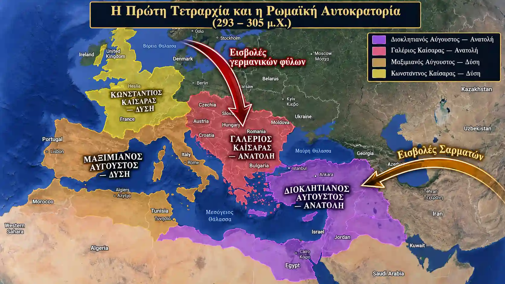
Τι κατάφερε;
Στην αρχή, το σχέδιο πέτυχε! Επανήλθε η ηρεμία και η τάξη στο εσωτερικό του κράτους, ενώ τα σύνορα έγιναν πιο ασφαλή από τις εχθρικές επιδρομές.
Όμως, η ηρεμία δεν κράτησε για πολύ!
Μετά την παραίτηση του Διοκλητιανού, ξέσπασαν νέες συγκρούσεις για την εξουσία ανάμεσα σε τέσσερις συνάρχοντες:
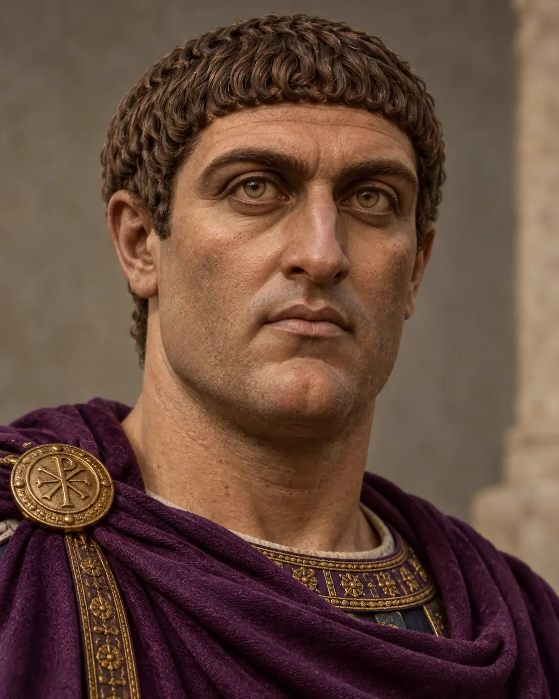
ΔΥΣΗΚωνσταντίνος
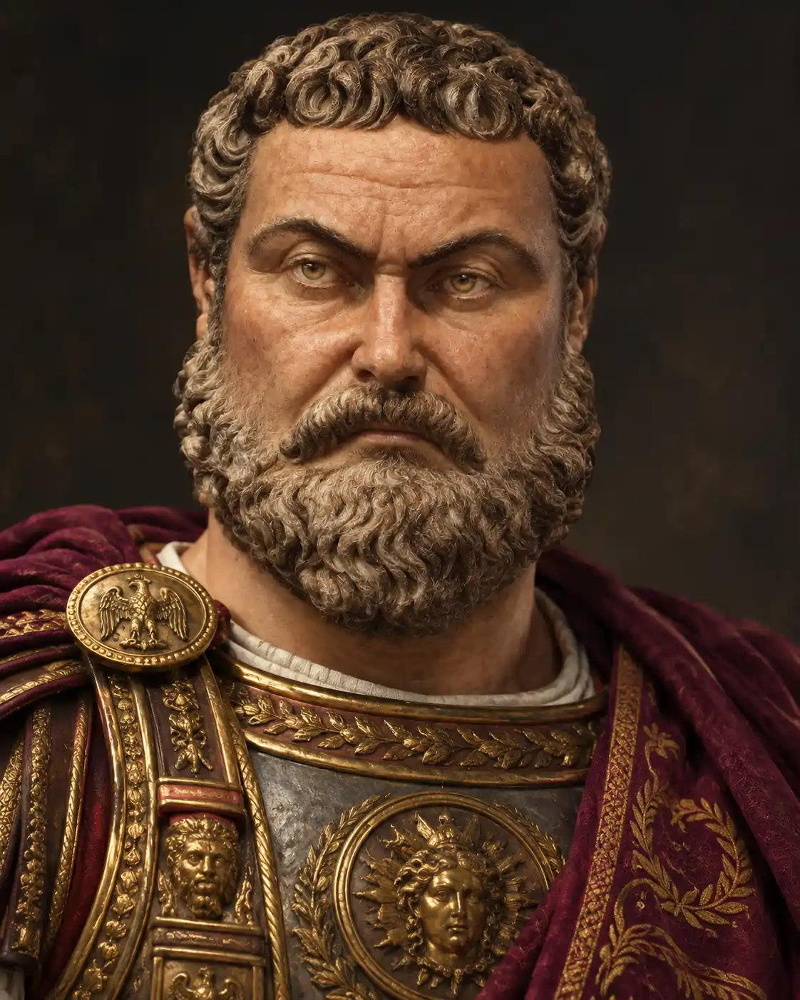
ΔΥΣΗΜαξέντιος
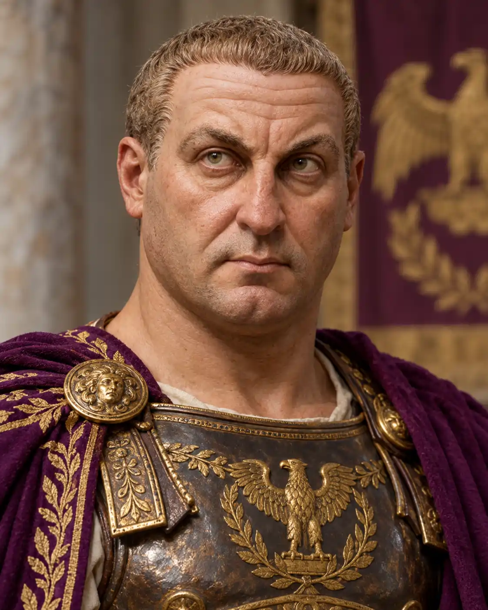
ΑΝΑΤΟΛΗΛικίνιος
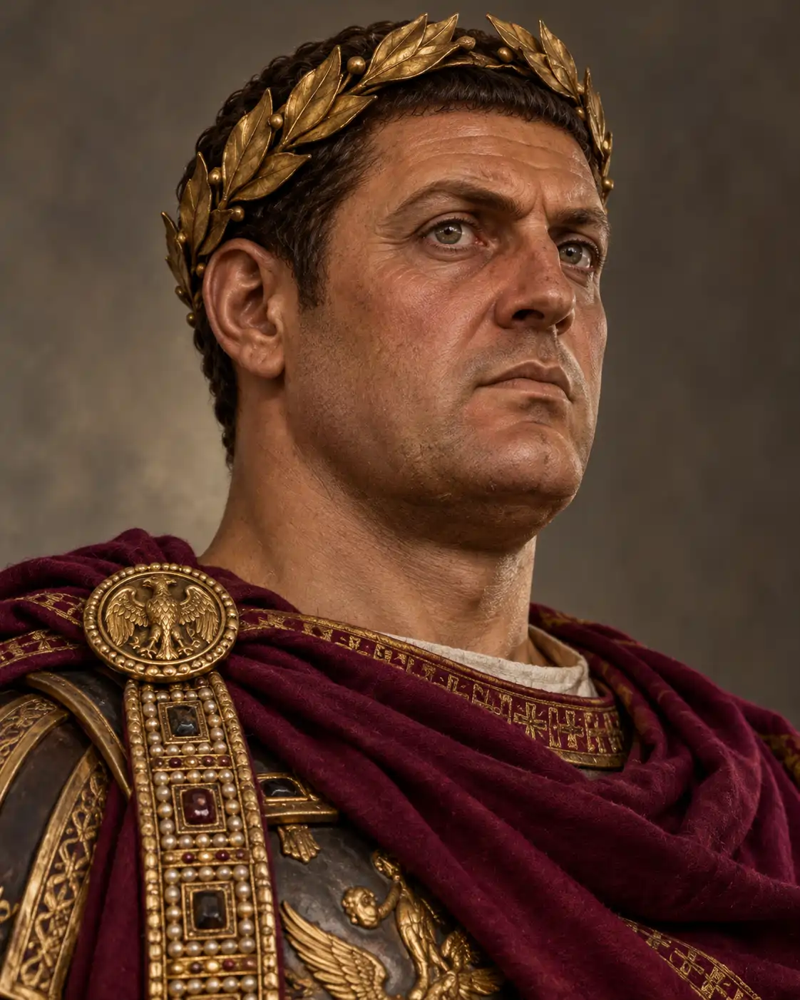
ΑΝΑΤΟΛΗΓαλέριος
Τελικά, από αυτές τις διαμάχες επικράτησαν ο Κωνσταντίνος στη Δύση και ο Λικίνιος στην Ανατολή.
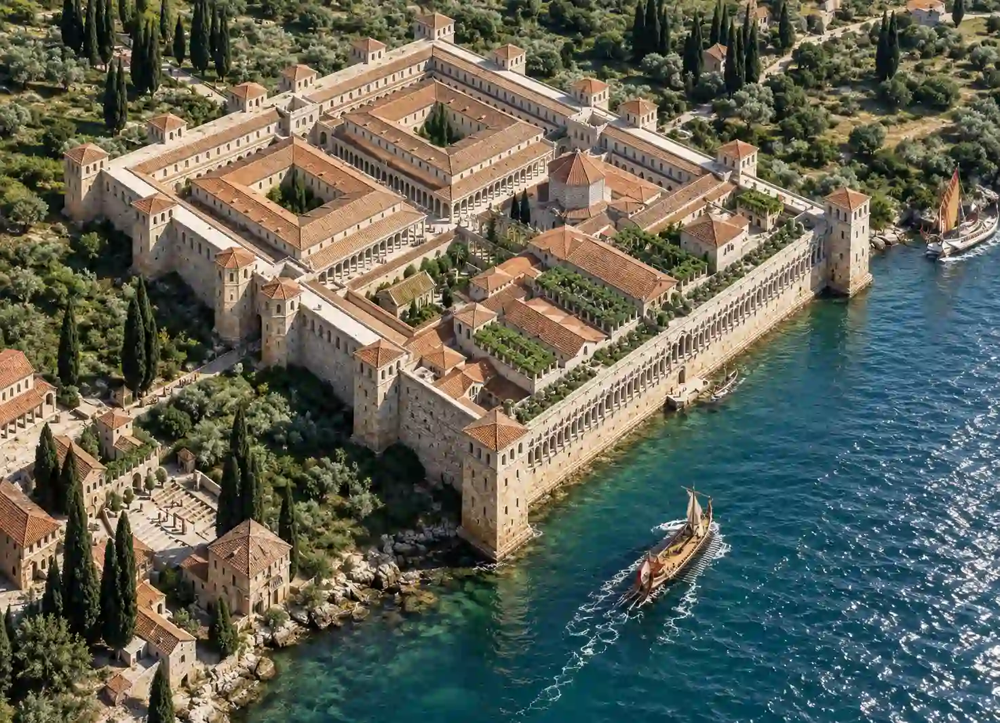
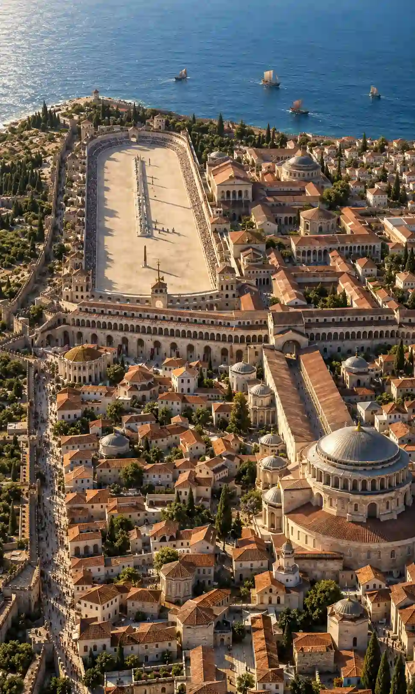
313 Μ.Χ.
Το Διάταγμα των Μεδιολάνων
Ο Κωνσταντίνος και ο Λικίνιος ήθελαν να σταματήσουν τις θρησκευτικές συγκρούσεις που προκαλούσαν οι διωγμοί των Χριστιανών.
Έτσι, το 313 μ.Χ., στο Μεδιόλανο της Ιταλίας (σημερινό Μιλάνο), συμφώνησαν να επιτρέψουν σε όλους τους κατοίκους να λατρεύουν ελεύθερα τον θεό που επιθυμούσαν.
Η απόφαση αυτή ονομάστηκε Διάταγμα των Μεδιολάνων ή Διάταγμα της Ανεξιθρησκίας.
Τι σημαίνει ανεξιθρησκία;
Είναι το δικαίωμα κάθε ανθρώπου να πιστεύει σε όποια θρησκεία θέλει, χωρίς να διώκεται γι’ αυτήν.
Με αυτή την απόφαση άνοιξε ο δρόμος για την ελεύθερη εξάπλωση του Χριστιανισμού.
324 Μ.Χ. · ΑΔΡΙΑΝΟΥΠΟΛΗ
Ο Κωνσταντίνος γίνεται μονοκράτορας
Η συνεργασία των δύο αυτοκρατόρων δεν κράτησε για πάντα.
Το 324 μ.Χ., ο Κωνσταντίνος και ο Λικίνιος συγκρούστηκαν στην Αδριανούπολη.
Ο Κωνσταντίνος νίκησε τον Λικίνιο και έγινε μονοκράτορας, δηλαδή ο μοναδικός κυβερνήτης ολόκληρης της Ρωμαϊκής Αυτοκρατορίας.
ΠΑΡΑΚΟΛΟΥΘΗΣΕ
Ο αυτοκράτορας Κωνσταντίνος
ΜΙΑ ΝΕΑ ΙΣΤΟΡΙΚΗ ΕΠΟΧΗ
Οι πέντε μεγάλες αλλαγές του Κωνσταντίνου
Ο Κωνσταντίνος πήρε σημαντικές αποφάσεις για να κάνει την αυτοκρατορία ξανά ισχυρή.
- I
Αναδιοργάνωσε τον στρατό
Έκανε τον στρατό πιο οργανωμένο και αποτελεσματικό, ώστε να προστατεύει καλύτερα την αυτοκρατορία.
- II
Βελτίωσε τη διοίκηση
Διόρισε έπαρχους με μεγάλες εξουσίες στις περιφέρειες της αυτοκρατορίας.
- III
Ανέπτυξε τη διπλωματία
Προσπάθησε να διατηρήσει καλύτερες σχέσεις με τους γειτονικούς λαούς, ώστε να αποφεύγονται οι συγκρούσεις.
- IV
Έκοψε νέο χρυσό νόμισμα
Το νέο νόμισμα κυκλοφόρησε σε όλη την αυτοκρατορία και βοήθησε την οικονομία και το εμπόριο.
- V
Μετέφερε την πρωτεύουσα
Επέλεξε το Βυζάντιο στη θέση της Ρώμης για τη νέα πρωτεύουσα, που ονομάστηκε Κωνσταντινούπολη.
Οι ιστορικοί τον ονόμασαν Μέγα Κωνσταντίνο, ενώ οι Χριστιανοί τον τιμούν ως Άγιο και Ισαπόστολο.
ΜΕ ΜΙΑ ΜΑΤΙΑ
Τα σημαντικότερα γεγονότα
Περίοδος ειρήνης και ακμής της Ρωμαϊκής Αυτοκρατορίας.
Εμφανίζονται σοβαρά εσωτερικά και εξωτερικά προβλήματα.
Ο Διοκλητιανός αναλαμβάνει την εξουσία και αργότερα οργανώνει την Τετραρχία.
Το Διάταγμα των Μεδιολάνων επιτρέπει την ελεύθερη θρησκευτική λατρεία.
Ο Κωνσταντίνος γίνεται μονοκράτορας.
Εγκαινιάζεται η Κωνσταντινούπολη ως νέα πρωτεύουσα.
ΕΠΑΝΑΛΗΨΗ
Ερωτήσεις και απαντήσεις
Πάτησε κάθε ερώτηση για να ελέγξεις την απάντησή σου.
ΤΙ ΠΡΕΠΕΙ ΝΑ ΘΥΜΑΜΑΙ ΟΠΩΣΔΗΠΟΤΕ;
Από την κρίση σε μια νέα εποχή
Διοκλητιανός→Τετραρχία→Κωνσταντίνος & Λικίνιος→Διάταγμα 313 μ.Χ.→Μονοκράτορας 324 μ.Χ.→Μεγάλες αλλαγές
Η Ρωμαϊκή Αυτοκρατορία αντιμετώπισε μεγάλες δυσκολίες, αλλά ο Διοκλητιανός και κυρίως ο Μέγας Κωνσταντίνος προχώρησαν σε αλλαγές που τη βοήθησαν να αναδιοργανωθεί και να περάσει σε μια νέα ιστορική εποχή.